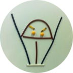

I used to be a graduate student studying cosmology. Now I am having fun with machine-learning and neural science. I have been a Linux user since 2010. After using a lisp-like language, Mathematica, for seven years, now I turn to play with Python and Haskell, sometimes Java and C also.
俺从前是研究宇宙学的研究生，如今改投机器学习和神经科学。 自 2010 年开始用 Linux。之前用 Mathematica 写了很多代码。 现在用 Python 和 Haskell，有时也写点 Java 和 C。
Literate Programming in HTML.
用 HTML 写的文学编程。
A brief note about information theory, statistical physics, stochastic process, action principle, and machine learning.
一个有关于信息论、统计物理、随机过程、作用量原理和机器学习的简要笔记。
A little book about the art of memory. On-going project.
一本关于艺造记忆的小书。 进行中🏗️
A little book about category theory, focusing the basic concepts. On-going project.
一本关于范畴论的小书，重点介绍基本概念。进行中🏗️
Energy-Based model implemented by TensorFlow 2.
用 TensorFlow 2 实现的能量模型。
Neural ODE implemented by TensorFlow 2.
用 TensorFlow 2 实现的神经微分方程。